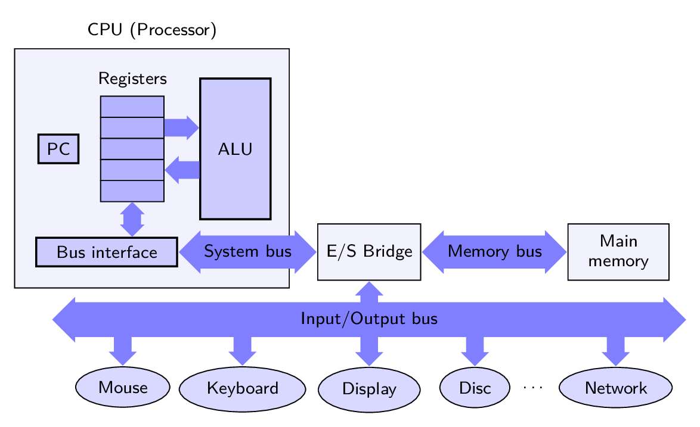

\documentclass[tikz, border=2mm]{standalone}
\usetikzlibrary{positioning,shapes,arrows,backgrounds,external,fit,calc}
\usepackage[T1]{fontenc}
\usepackage[utf8]{inputenc}
\usepackage{lmodern}
\tikzset{
BlockCPU/.style={draw,thick, fill=blue!20, rectangle},
BlockAltre/.style={draw,thick, fill=blue!35, rectangle},
Periferic/.style={ellipse, draw, fill=blue!15},
Registre/.style={rectangle, draw, fill=blue!5},
RegistreBuit/.style={rectangle, draw, fill=blue!30,minimum width=.9cm, minimum height=3mm, inner sep =0pt, outer sep=0.pt, anchor=south east},
Bus/.style={fill=blue!50},
Nom/.style={font=\normalsize\sffamily,text centered, minimum size=1cm, text width=1.5cm}
}
\begin{document}
\begin{tikzpicture}[font={\sffamily\scriptsize}]
\node[Registre, minimum width=3.9cm, minimum height=3.4cm, anchor=south west, label={above:CPU (Processor)}] (CPU) at (0,0) {};
%\node[Nom,above right, align=left] (CPUnom) at (CPU.north west) {CPU};
\node[BlockCPU, minimum width=2cm, anchor=south west] (IB) at (0.3,0.3) {Bus interface};
\node[RegistreBuit] (Reg1) at ($(IB.north east)+(-2mm,5mm)$) {};
\node[RegistreBuit] (Reg2) at (Reg1.north east) {};
\node[RegistreBuit] (Reg3) at (Reg2.north east) {};
\node[RegistreBuit] (Reg4) at (Reg3.north east) {};
\node[RegistreBuit,label={above:Registers}] (Reg5) at (Reg4.north east) {};
\node[BlockCPU, left=3mm of Reg3] (PC) {PC};
\node[BlockCPU, right=5mm of Reg3, minimum width=1cm, minimum height=2cm] (ALU) {ALU};
\draw let \p1=($(Reg1.south) - (Reg1|-IB.north)$), \n1={veclen(\x1,\y1)} in node[double arrow, Bus, shape border rotate=90,anchor=north, minimum height=\n1-\pgflinewidth,minimum width=1mm, double arrow head extend=.5mm] at ([yshift=.5\pgflinewidth]Reg1.south) {};
\node[single arrow, Bus, anchor=west, minimum width=2mm, single arrow head extend=.5mm, minimum height=5mm-.5\pgflinewidth] at (Reg4.east) {};
\node[single arrow, Bus, anchor=west, minimum width=2mm, single arrow head extend=.75mm, minimum height=5mm-.5\pgflinewidth, shape border rotate=180] at (Reg2.east) {};
\node[double arrow, Bus,, anchor=west, minimum width=1mm, double arrow head extend=.75mm] (BusS) at (IB.east) {System bus};
\node[Registre,minimum width=12mm,minimum height=8mm, anchor=west] (ES) at (BusS.east) {E/S Bridge};
\node[double arrow, Bus,, anchor=west, minimum width=1mm, double arrow head extend=.75mm] (BusM) at (ES.east) {Memory bus};
\node[Registre,minimum width=12mm,minimum height=8mm, text centered,text width=12mm,anchor=west] (Mem) at (BusM.east) {Main memory};
\node[double arrow, Bus,, anchor=north, minimum height=9cm, minimum width=2mm, double arrow head extend=.75mm,anchor=north] (BusES) at ([yshift=-.3cm]ES.south) {Input/Output bus};
\node[single arrow, Bus,, anchor=north, minimum width=2mm, single arrow head extend=.75mm, minimum height=3mm-.5\pgflinewidth, shape border rotate=90] (BusESP) at (ES.south) {};
\node[single arrow, Bus,, anchor=north, minimum width=2mm, single arrow head extend=.75mm, minimum height=5mm-.5\pgflinewidth, shape border rotate=270] (Per1) at ([shift={(-3.5cm,1mm)}]BusES.south) {};
\node[Periferic,anchor=north] (Ratoli) at (Per1.south) {Mouse};
\node[single arrow, Bus, anchor=north, minimum width=2mm, single arrow head extend=.75mm, minimum height=5mm-.5\pgflinewidth, shape border rotate=270] (Per2) at ([shift={(-1.8cm,1mm)}]BusES.south) {};
\node[Periferic,anchor=north] (Teclat) at (Per2.south) {Keyboard};
\node[single arrow, Bus,, anchor=north, minimum width=2mm, single arrow head extend=.75mm, minimum height=5mm, shape border rotate=270] (Per3) at ([shift={(0cm,1mm)}]BusES.south) {};
\node[Periferic,anchor=north] (Pantalla) at (Per3.south) {Display};
\node[single arrow, Bus,, anchor=north, minimum width=2mm, single arrow head extend=.75mm, minimum height=5mm, shape border rotate=270] (Per4) at ([shift={(1.5cm,1mm)}]BusES.south) {};
\node[Periferic,anchor=north] (Disc) at (Per4.south) {Disc};
\node[single arrow, Bus,, anchor=north, minimum width=2mm, single arrow head extend=.75mm, minimum height=5mm, shape border rotate=270] (Per5) at ([shift={(3.5cm,1mm)}]BusES.south) {};
\node[Periferic,anchor=north] (Xarxa) at (Per5.south) {Network};
\path (Disc) -- node {\dots} (Xarxa);
\end{tikzpicture}
\end{document}